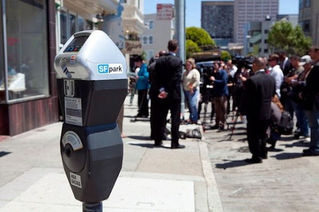

Smart Cities
Table of Contents
1 智慧城市
智慧城市(Smart City)的概念，較為具體及具有共識的內容最早於2008年由IBM首席執行長彭明盛所提出，2010年，IBM收集了許多資訊反饋，正式提出了「智慧城市」，希望以資通領導者的角色，積極為國家政策提供專家意見、辦理新的通訊及數位技術的推廣者。IBM經過長期的研究觀察，城市的主要功能由六個核心系統組成：人、行政事務整合、交通、通訊、天然能源。這些核心並不是獨立的存在，而是作為彼此互相關聯的運作生態。而城市本身，便是以此為基礎建構的龐大資訊系統1。
所謂的「智慧」就是透過新一代的資訊科技，例如物聯網 (IoT)、雲端運算、移動互聯網、智慧型終端等，應用到城市中的電力系統、自來水系統、交通系統、建築物和油氣管道、工廠、辦公室及居家生活等生產或生活系統的各種物件中，將我們的感知與所有的設備系統能形成經濟、有效的互動，讓人們可以有更好的工作效率及生活品質。利用ICT技術強化公共市政服務，不僅可以提升政府效能，更可以讓民眾享有更美好的生活品質，因而各國政府都將建設智慧城市視為提升城市競爭力的重要指標2。
依據2018年聯合國的報告，預估2050年全球將有多達2/3人口居住在城市裡，高密度聚攏的人潮將為城市機能帶來嚴苛考驗，不論是金融消費、教育娛樂、交通運輸、醫療照護、建築建設，甚至市政服務、城市安防、能源管理等等，都可能因量變而推動質變，所幸隨著人工智慧 (AI) 與物聯網的技術發展，硬體設備中都可以裝載可連網的晶片，透過資訊即時傳遞和處理，整合應用創造智慧加值服務，有助於減緩人口擁擠所帶來的危機，實現智慧城市的科技與便利2。
2 智慧城市數據來源
人類的智慧來自知識與思考；城市的智慧來自於數據與分析。而智慧城市需要哪些方面的數據做為進一步分析、預測、輔助行政決策的依據？以下由智慧城市之評估指標以及實務應用兩面向加以探討。
2.1 智慧城市評估指標
智慧城市評估指標不僅為城市智慧化程度的判斷依據，其評估面向也代表評估機構對於城市智慧化應涵蓋範圍與發展趨勢的判斷，以下為幾個較具代表性的評估指標：
智慧城市輪(Smart City Wheel)
國際知名城市策略師和智慧城市權威布特高漢(Boyd Cohen5) 參考各項主要指數和排名，於 2012 年提出「智慧城市輪」(Smart City Wheel，如圖1)，列出智慧城市的特徵、功能和目標，涵蓋「智慧經濟」(Smart Economy)、「智慧環境」(Smart Environment)、「智慧市民」(Smart People)、「智慧流動」(Smart Mobility)、「智慧生活」 (Smart Living)和「智慧政府」(Smart Government)等六大範疇 18 個分領域，並以此為基礎，聯同其它研究和推動智慧城市的代表人士，共同制定 62 項具體評核指標，並於 2013 年公布全球智慧城市排名，前三名分別為韓國首爾、新加坡和日本東京3。
Figure 1: Caption
以此六大核心面向又分別包含三個子項目4：
- 智慧環境（Smart Environment）
- 智慧建築
- 智慧能源及資源管理
- 都市規劃
- 智慧建築
- 智慧交通（Smart Mobility）
- 多元的智慧交通方式
- 乾淨、永續能源的綠色交通
- 智慧交通大數據應用
- 多元的智慧交通方式
- 智慧生活（Smart Living）
- 健康、醫療與衛生
- 社會安全
- 文化與幸福感
- 健康、醫療與衛生
- 智慧市民（Smart People）
- 智慧教育
- 種族多樣性、包容性、公共事務參與率
- 市民創造力
- 智慧教育
- 智慧政府（Smart Government）
- 數位便民服務
- 數位基礎設施普及程度
- 公開資料及數位政府透明度
- 數位便民服務
- 智慧經濟（Smart Economy）
- 創新與機會
- 產業生產力
- 在地與國際的連結度
- 創新與機會
Boyd Cohen也強調，科技高度發展的城市並非就能成為智慧城市，因為打造智慧城市不僅僅只在硬體建置、ICT 或技術整合等硬實力，同樣也著重於管理途徑、規劃設計、創新包容、主觀幸福感、社群力量等軟實力的開發，且目標應該是要提升城市生活品質，讓城市發展越來越好5。
- 智慧環境（Smart Environment）
2020智慧城市指數(Smart City Index 2020)
瑞士洛桑管理學院（International Institute for Management Development, IMD）於2020年9月18日發布2020智慧城市指數報告（Smart City Index 2020）。該報告為IMD和新加坡科技設計大學（Singapore University of Technology and Design, SUTD）共同出版，該報告評比109個城市，前5名智慧城市分別為：新加坡、赫爾辛基（芬蘭）、蘇黎世（瑞士）、奧克蘭（紐西蘭）、奧斯陸（挪威）。其他重要城市排名包括紐約第10、倫敦第15、香港第32、首爾第47、巴黎第61、東京第79、上海第81名等6。
報告中智慧城市五大評比關鍵標準分別為：健康與安全（health and safety）、運輸及交通（mobility）、城市活動（activities）、機會（opportunities）和政府治理（governance）。每個標準又可區分為「結構面」（Structures）和「科技面」（Technologies）各20個細項評比，前者包含如城市基礎衛生、空氣汙染、醫療設備充足程度、交通擁塞度、綠地空間、文化活動、就業率以及居民和政府機關的互動度等；而後者則包含免費公共WIFI普及度、電子設施使用便利度（例如以空氣汙染偵測、安排醫療活動、文化活動線上購票和共享乘車以減少交通擁塞等）、大眾運輸動態資訊及其他電子化服務等6。
綜合以上評估指標內涵，智慧城市的評估標準大致應包涵以下幾個面向：
- 交通運輸
- 健康醫療
- 能源管理
- 污染管控
- 文化教育
- 市民參與
2.2 目前智慧城市之實務應用
檢視前述各智慧城市評估指標，可發現其服務涵蓋範圍十分廣泛，要能即時蒐集分析如此龐大的數據，城市除了要俱備快速的5G網路、涵蓋完整的基地台、高效的運算能力、以及量身打造的人工智慧應用程式，更重要的是物聯網(Internet of Things, IoT)技術的支援，所有智慧城市所需數據幾乎全仰賴IoT進行蒐集。可以說，IoT是實現智慧城市最重要的礎，而智慧城市則是IoT最典型的應用場域。
知名市場研究機構IoT Analytics於2020年9月1日發布「2020年智慧城市的使用案例與技術報告」(Smart City Use Cases & Technology Report 2020)，該份報告針對倫敦、北京、柏林、巴塞隆納和杜拜等31個世界知名的智慧城市所採行的應用案例以及50個智慧城市關鍵決策者所提出的措施進行研究。而IoT Analytics進一步以上述報告為基礎，進一步對智慧城市應用案例進行分析。該份報告結果指出全球頂尖智慧城市的前十項IoT實際應用案分別為：
- 公共運輸連網(Connected public transport)
- 交通狀態監管(traffic monitoring and management)
- 水文狀態監控(Water level / Flood monitoring)
- 視訊監控與分析(Video surveillance & analytics)
- 連網路燈(Connected Streetlights)
- 氣候監測(Weather Monitoring)
- 空氣品質/汙染監測(Air Quality / pollution monitoring)
- 智慧水/電錶(Smart Metering - Water)
- 火災偵測(Fire / Smaoke Detection)
- 水質監控(Water Quality Monitoring)

Figure 2: 50個智慧城市中採用物聯網相關措施分布(百分比)
其中，「公共運輸連網」(Connected public transport)是智慧城市中應用物聯網技術最多的案例類型，占整體應用比例74%，其主要應用內容包含：大眾運輸交通工具位置和路徑的即時顯示、最佳路徑、交通狀態(如：交通訊號、是否塞車等)以及客製化旅遊與新聞訊息整合(如圖2)。這些解決方案使人們在擁擠的城市中的移動問題能獲得效率上的提升，此外便捷與訊息透明，使大眾交通的重要性提升7。
占比在公共運輸連網之後，同時居於次位者是占比皆為72%的「交通狀態監管」(Traffic Monitoring and Management)、「水文狀態監控」(Water level / Flood Monitoring)以及「視訊監控與分析」(Video Surv eillance & Analytics)。隨著城市人口的成長，導致越來越多的汽車同時在擁擠的道路上行駛，交通狀態監管變得越來越重要。而水文狀態監控主要在解決公共水域，例如：河流、河道甚至湖泊和海洋中的水位、潮汐等水文狀況；該解決方案在城市人口密集的地區或是農村地區(如：災防)，應用也都很重要7。
在視訊監控與分析方面，藉由智慧鏡頭和分析工具來檢測特定情況，例如：事故、犯罪、潛在威脅或識別特定特徵(面部識別、人口統計等)；這類解決方案在人多而又無充足人力即時監看所有訊息的城市地區特別有用。依據IoT Analytics的分析，位居第5名的應用則是「連網路燈」(Connected Streetlights) 占比為68%，其應用主要在監控和管理路燈的設施狀態(例如：能源消耗)，可幫助城市降低公共設施成本並增加設備適用壽命或公共安全性；除連網路燈外占比同為68%者尚有「氣象觀測」與「空氣品質偵測」等應用，都為城市居民帶來生活上的便利，協助居民應對環境的局部變化7。
2.3 小結
綜合上述評估指標與實務應用案例的分析，從建構智慧城市所需蒐集數據類型的角度來看，本研究以為智慧城市之數據來源至少應涵蓋以下幾個面向：
- 交通運輸
即，利用電子、電信及資訊科技、控制、機械等技術於各種運輸系統(特別指陸上運輸系統)，以改善交通運輸問題。
- 公共運輸連網(Connected public transport)
- 交通狀態監管(traffic monitoring and management)
- 連網路燈(Connected Streetlights)
- 公共運輸連網(Connected public transport)
- 健康醫療
- 能源管理
- 智慧水/電錶(Smart Metering - Water)
- 智慧水/電錶(Smart Metering - Water)
- 污染管控
- 水質監控(Water Quality Monitoring)
- 空氣品質/汙染監測(Air Quality / pollution monitoring)
- 水質監控(Water Quality Monitoring)
- 公共安全
- 火災偵測(Fire / Smaoke Detection)
- 水文狀態監控(Water level / Flood monitoring)
- 視訊監控與分析(Video surveillance & analytics)
- 視訊監控與分析(Video surveillance & analytics)
- 火災偵測(Fire / Smaoke Detection)
- 智慧政府
- 數位便民服務
- 數位基礎設施普及程度
- 公開資料及數位政府透明度
- 數位便民服務
- 市民參與
- 數位便民服務
- 數位基礎設施普及程度
- 公開資料及數位政府透明度
- 數位便民服務
下節分述各面向所需之數據類型並以現有應用案例詳加說明。
3 智慧城市之數據分析案例
3.1 交通運輸8, 9
即，利用電子、電信及資訊科技、控制、機械等技術於各種運輸系統(特別指陸上運輸系統)，以改善交通運輸問題。在歐洲常被稱為交通遠端資訊處理(Transport Telematics)。根據美國智慧交通協會的定義，智慧交通結合資訊處理、電信、控制及電子等技術，應用於運輸系統，以減少交通事故及擁擠，並提運輸效率。歐洲智慧交通協會的定義則是：智慧交通利用資訊、運輸及電信等技術應用於車輛及道路基礎設施的運作，以改善運輸機動性，同時增進運輸安全、減少交通擁擠及提高舒適程度，並減少環境衝擊10。
- 公共運輸連網(Connected public transport)
- 交通狀態監管(traffic monitoring and management)
- 連網路燈(Connected Streetlights)
- 交通引導資訊
- 維也納
在維也納，居民可以透過智慧手機，應用Quando輕鬆獲取各種交通工具的即時資訊，該應用還會在下一趟，電車、地鐵或公共汽車出發前提醒用戶。此外，用戶還可以透過WienMobil來規劃出行服務，無論是公共交通工具、步行、騎自行車、搭乘計程車，還是共享汽車，用戶都可以透過該APP，輕鬆預訂和支付。
此外，維也納還改善特殊人群的出行，除了多媒體的交通引導系統、車站服務資訊(包括當前電梯故障的通知)外，還為聽覺和視覺障礙人士，提供客製化的路線規劃。
- 香港
在香港，交通運輸營運商已利用大數據和其他科技，為出行者帶來更大便利。以鐵路運輸服務供應商香港鐵路有限公司為例，乘客只須在其網站或流動應用程式輸入出發地和目的地，即可獲得預計行程時間、轉乘站和票價等資料，有助計劃行程。九巴、新巴及城巴等公共巴士公司，也在其流動應用程式及巴士站顯示屏上，提供實時的預計到達時間。
- 倫敦
倫敦交通局在2017年透露，它正在使用其地鐵網路上，提供的免費WiFi，來跟蹤乘客的行動。倫敦交通局現在不僅知道，人們出行的起點和終點，而且知道他們如何在這兩點之間移動。這將有助於他們規劃一個更高效的網路，為乘客提供更快捷的出行路線，和更好的出行體驗。
- 維也納
- 交通狀況資訊
- 停車資訊
- 巴塞隆納
巴塞隆納已經實施了多種智慧交通方案，包括公車站的交互式觸控螢幕資訊顯示，智慧停車感測器，允許駕駛員查找附近空閒停車位，自行車共享系統Bicing和共享電動滑板車租賃。所有這些方案，正在幫助巴塞隆納，成為一個智慧和宜居的城市。
- 美國舊金山

SFpark是舊金山的智慧城市項目之一，透過使用無線感測器，來檢測道路上的停車位佔用情況，城市管理機構可以根據此資訊，來調整停車價格。舊金山市交通局(SFMTA)創新總監Darton Ito表示，「SFpark計劃旨在減少人們尋找停車位的時間，以減少延誤交通、阻礙騎車者，並導致更多分心駕駛的情況。
透過即時調整停車訂價，來確保在某些地區內，有可用的停車位，使停車費不會太低，而導致停車位被一直佔用，或停車費太高，導致存在大量空閒停車位」。據SFMTA首席發言人Paul Rose表示，SFpark項目實施以來，已經使溫室氣體排放量減少30%，並且在該項目實施的社區中，行駛的車輛里程數減少了30%。此外，舊金山還計劃透過換乘、共享和積極的運輸方式，使單人乘車出行減少10%。想要實現這一目標，使用網路技術來改善公共交通系統，將成為關鍵。
- 新加坡
除交通堵塞外，司機要在城市內找到停車位也不容易。為改善停車體驗，不少城市已採用科技，以有效管理停車位並為司機提供更多方便。在新加坡，停車場以多種方式實現數碼化。樟宜機場停車場等大型停車設施已安裝帶有傳感器的視頻停車引導系統，監控停車場的實時狀態。這個基於物聯網的系統能夠識別車牌號碼、偵測車輛的所在及其進出時間。在支付方面，該國所有公共停車場和停車位已採用電子支付，取代傳統的實體停車繳費卡，用戶可以使用流動設備支付短期停車費，並通過Parking.sg流動應用程式遙距延長其停車時間。
- 巴塞隆納
- 交通系統維運作資訊
- 東京
日本東京，是世界上人口密度最高的超大城市之一，擁有超過1300萬居民(如果算上整個城區，人口達到3800萬)。同時，該城市每年還接待，來自世界各地的眾多遊客。但在如此大的流量壓力下，其運輸系統的高效和易用性，一直廣受讚譽。Yamanote線是東京市中心的環線，是世界上最大的交通基礎設施，每周輸送乘客達到3400萬人次。從早到晚，列車每兩到三分鐘就要開列一班。因此，這條鐵路線路的日常維護，成為一項艱巨的挑戰。而在物聯網技術的幫助下，地鐵營運公司得以即時收集和分析，設備狀態的數據，可以辨識缺陷、預測故障和安排維修。這種「狀態維護」方式，使得低效的定期維護系統，轉變為智慧維護系統。
- 倫敦
多年來，倫敦交通局一直在努力，組織龐大的地鐵系統的複雜維護需求，在閉路電視攝影系統、自動扶梯、PA揚聲器、空調系統和地鐵隧道中，安裝了網路感測器。透過中央控制中心，使用這些感測器收集的數據，來跟蹤設備營運狀況，並部署維護團隊。這樣可以節省資金，並減少與維護相關的延遲。
- 瑞典斯德哥爾摩
在瑞典斯德哥爾摩，汽車大廠Volvo跟市政府做數據交換，用在交通、停車數據使用，車與車之間可以聯網溝通，當發現路面坑洞造成無法行駛時，可以發出訊號即時警告接近的駕駛，並把數據回傳給交通單位做處理。
- 東京
- 自動駕駛所需輔助資訊
越來越多城市已試驗自動駕駛汽車，並且推出無人駕駛公共交通運輸工具。美國自動駕駛科技公司Waymo是Alphabet公司的附屬公司，於2018年12月在亞利桑那州鳳凰城成功推出全球首個無人駕駛出租車服務。在亞洲，一些城市也加快測試自動駕駛巴士。例如，中國鄭州在2019年6月於開放公交線路上試運宇通客車的5G電動無人駕駛巴士，而新加坡也在聖淘沙和南洋理工大學校園進行無人駕駛巴士的公開試驗。
3.2 健康醫療
3.3 能源管理
- 智慧水/電錶(Smart Metering - Water)
3.4 污染管控
- 水質監控(Water Quality Monitoring)
- 空氣品質/汙染監測(Air Quality / pollution monitoring)
3.5 公共安全
目前臺灣在防災的部分各方面已有不少應用，可配合國家災害防救科技中心提供資料，採用ATOM feed 或主動推送，獲取即時災防示警資訊展示及相關行動建議，以成就環境敏感地區智慧化的目標。或使用台灣國家通訊傳播委員會(NCC)已建置完成之災防告警細胞廣播訊息服務(CBS, cellbroadcast system)，其為政府「防救災雲端計畫」項下一子系統，由行政院相關部會與4G業者通力合作建置，其特點為災防告警訊息係以廣播方式進行傳送，只要幾秒，特定區域內所有4G用戶手機即可收到災防業務主管機關發布的告警訊息，以地震即時警報為例，若中央氣象局偵測到發生規模 5 以上的地震，且預估震度達到 5 級以上，將會針對震度 4 級以上地區民眾的手機推送地震警報10。
- 火災偵測(Fire / Smaoke Detection)
- 水文狀態監控(Water level / Flood monitoring)
- 視訊監控與分析(Video surveillance & analytics)
- 視訊監控與分析(Video surveillance & analytics)
3.6 智慧政府
- 數位便民服務
- 數位基礎設施普及程度
- 公開資料及數位政府透明度
3.7 市民參與
- 數位便民服務
- 數位基礎設施普及程度
- 公開資料及數位政府透明度
4 智慧城市之資訊安全與個人隱私
傳統上，城市提供各種各樣的服務，這些服務很大程度上是相互獨立的(例如：水、電、污水處理、交通、公共工程、法律、消防以及社會服務)。這當中每一項服務過去皆由供應商自己的系統、流程與資產所提供，而現在這些服務正透過互聯的數位技術慢慢地整合和連接成為一個網路。當城市獲得擴展新服務與增加效率的機會，也同時不斷增加的整合、互連與數據交換所產生的共享漏洞，其中一個區域內的問題可能迅速級擴散到其他區域，導致廣泛且災難性的故障。以至於城市需要重新思考監管需求、合理化各安全協議，並且解決資料所有權與使用權之挑戰11。
於此同時，智慧城市的運作基礎在於蒐集、分析大量的城市數據並即時做出因應措施，而這些來自於市民的數據是否會因濫用而侵害到公民的隱私權?
- 如Covid-19確診個案足跡資訊、或是etag記錄行車足跡…. BALABALA….
- 去識別化?…. BALABALA….